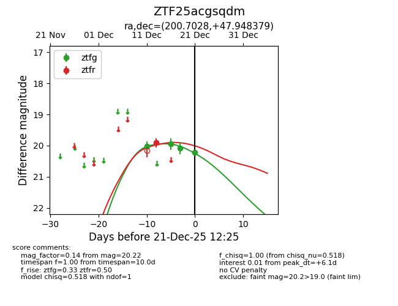
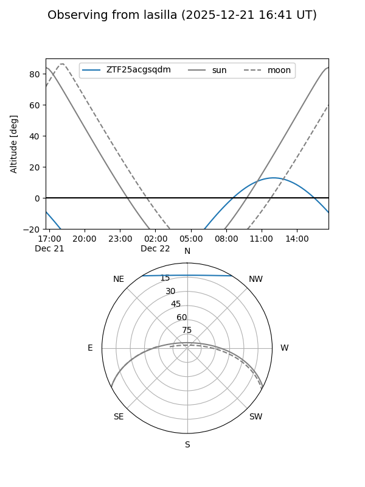
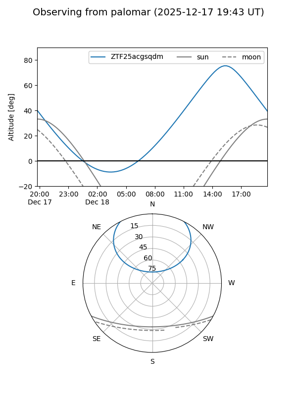
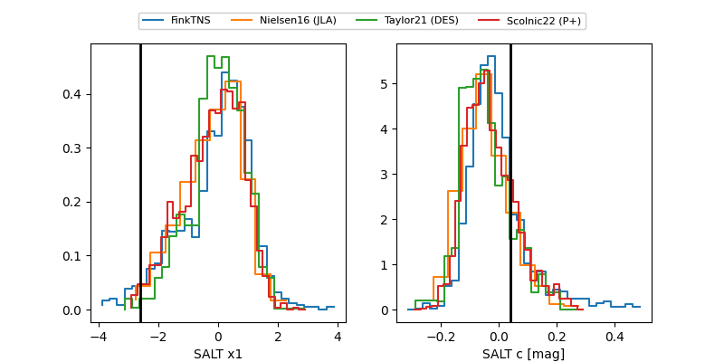

ZTF25acgsqdm
Target ZTF25acgsqdm at 2025-12-21 12:27
Aliases and brokers:
FINK: fink-portal.org/ZTF25acgsqdm
Lasair: lasair-ztf.lsst.ac.uk/objects/ZTF25acgsqdm
ALeRCE: alerce.online/object/ZTF25acgsqdm
alt names
ZTF25acgsqdm (ztf,fink_ztf)
Coordinates:
equatorial (ra, dec) = 200.7028,+47.94838
equatorial (HMS+DMS) = 13:22:48.68,+47:56:54.17
galactic (l, b) = (108.6204,+68.29869)
Flags:
Photometry:
last ztfg=20.22, ztfr=19.91
4 ztfg, 1 ztfr detections
Lightcurve

Visibility


Additional plots
